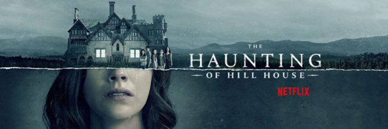

The Haunting of Hill House
Haunted-house stories are, by their very nature, self-contained. So it’s especially impressive that The Haunting Of Hill House, the newest in a series of collaborations between Netflix and director Mike Flanagan, manages to be both sprawling and terrifying at the same time. Flanagan and the show’s writers take pains to include at least one horror sequence in each episode of this 10-part series, ranging from hauntingly subtle to nauseatingly intense. They’re all elegantly executed, however, and powerful enough to linger in that floating space between waking and sleep for nights on end. (Episode five, which details a woman’s lifelong torment at the hands of a buzzing black void in the shape of a nightmarishly mangled woman known as the Bent-Neck Lady, had this writer sleeping with the lights on for the first time in years.) But what’s most effectively upsetting about Hill House isn’t how scary it is. It’s the devastating sadness that lingers long after the ghosts retreat back into the darkness.

Themes of generational trauma, inherited mental illness, and the guilt and fear that accompany them have been popular in horror this year. The new Halloween movie touches upon them, and Hereditary explores them in harrowing depth, but The Haunting Of Hill House is the most moving depiction of trauma and its aftermath to come out of the horror genre in 2018. Of course, Hill House has about eight more hours in which to explore these themes than either of those films. That’s just the nature of the two mediums. But Hill House puts its extra breathing room toward commendably novelistic ends, taking a contemporary, character-based approach that carries little over from Shirley Jackson’s original novel, yet still feels in the spirit of the book.
After a pilot-style first episode introducing the premise, the major players, and their relationships to one another, The Haunting Of Hill House devotes the rest of its first half to episode-length portraits of members of the Crain family, whose experiences growing up in America’s most famous haunted house have fucked them all up in their own unique ways. (In a bit of meta storytelling, the Crains and Hill House are famous within the word of the series, much like the Lutz family and The Amityville Horror are in real life.) These thematically rich portraits jump around in time and space, juxtaposing supernatural events from the summer the Crains lived in Hill House with the emotional aftershocks of those events, and how they have shaped each sibling’s life.
Eldest son Steven Crain (Paxton Singleton/Michiel Huisman) rationalizes away his family’s paranormal experiences as manifestations of mental illness; ironically, he’s also the one member of the family to talk about Hill House publicly, in a book that caused many hurt feelings between him and eldest sister Shirley (Lulu Wilson/Elizabeth Reaser). Shirley has channeled her early experiences with death into a career as a mortician, typical of her tightly controlled approach to life. Meanwhile, although stubbornly independent middle child Theo (McKenna Grace/Kate Siegel) has also channeled her trauma into a career as a child psychologist, her heavy drinking and callous treatment of her sort-of girlfriend, Trish (Levy Tran), betray a deeper inner turmoil.
Then there are twins Luke (Julian Hilliard/Oliver Jackson-Cohen) and Nell (Violet McGraw/Victoria Pedretti), who, as youngest children often are in ghost stories, are singled out for special persecution by the sinister forces inside Hill House. As adults, Luke uses heroin to keep his (very literal) demons away, while the psychologically fragile Nell ends up back on the doorstep of Hill House in an ill-advised attempt to confront hers. They all have a strained relationship with their father, Hugh, played by Henry Thomas in the past and Timothy Hutton— who makes an excellent deadbeat dad—in the present day. In true repressed baby boomer style, Hugh never told anyone, least of all his kids, what really happened the night they fled Hill House—the night saintly Crain family matriarch Olivia (Carla Gugino) died.
 The truth is laid out in the second half of the series, as the lines between past and present, life and death, and dreams and reality blur. The sixth episode is the most technically ambitious of the series, opening with an unbroken, flawlessly choreographed 23-minute tracking shot that incorporates both casts of Crains. After that stunning directorial achievement, Hill House dips for a few dialogue-heavy episodes, but the extra exposition is necessary for Flanagan’s directorial masterstroke: As the puzzle pieces fall into place, the tone of the supernatural sequences changes from terrifying to tragic, evoking the primal fears parents and children have for—and of—each other. (Episode nine in particular may be difficult for parents of young children to watch.)
The truth is laid out in the second half of the series, as the lines between past and present, life and death, and dreams and reality blur. The sixth episode is the most technically ambitious of the series, opening with an unbroken, flawlessly choreographed 23-minute tracking shot that incorporates both casts of Crains. After that stunning directorial achievement, Hill House dips for a few dialogue-heavy episodes, but the extra exposition is necessary for Flanagan’s directorial masterstroke: As the puzzle pieces fall into place, the tone of the supernatural sequences changes from terrifying to tragic, evoking the primal fears parents and children have for—and of—each other. (Episode nine in particular may be difficult for parents of young children to watch.)
The real marvel of The Haunting Of Hill House is in its execution. Plot threads that initially may seem to go nowhere, or seem obvious, actually have welcome, complicated layers that reveal the relatable family dynamics underneath the heightened horror as the series goes on. The intermingling of imagery and emotion in The Haunting Of Hill House is especially well done, using the actors’ expressions to telegraph the emotional tenor of the scene while keeping the framing and editing restrained. (That’s a credit to the actors as well; Pedretti and Siegel are standouts as the adult Nell and Theo, as are Gugino and Hutton.) Even the order in which the Crain siblings are introduced is smart, changing our perceptions of characters’ behavior and giving chilling new context for minor details as significant moments are re-introduced later in the series.
Now nearly 20 years into his directorial career, Flanagan has developed a signature palette of burnished steel grays and moldy blue-greens, colors that are well-suited to Hill House’s nightmare imagery of rotting corpses and pale spirits. The contemporary spaces similarly reflect Flanagan’s fondness for Cape Cod-style interiors, while Hill House itself is so portentously Gothic, with massive staircases, wrought-iron chandeliers, and a marble corridor full of neo-classical statuary, that it’s a wonder why anyone would step over the threshold in the first place—let alone try to open the locked red door at the end of a long, dark hallway that looms over the Crain family’s imagination.
Given the high level of craft on display throughout The Haunting Of Hill House, and the powerful emotional content of the earlier episodes, it’s disappointing when the series fails to stick the landing. A big part of that is the framing of Steven, the character with the greatest emotional distance from the events at Hill House, as the ostensible protagonist, a deflating choice given all the fascinating characters around him. Some of the writing is a bit overwrought as well: The back half of the series is stuffed with monologues in which a character tells another character a long, personal story that conveniently dovetails with that episode’s theme, a choice that seems particularly florid given the brutal economy of the horror scenes. That may just be a matter of taste, however. Some people like baroque excess; just look at the inside of Hill House.
- Katie Rife, AVClub
After a pilot-style first episode introducing the premise, the major players, and their relationships to one another, The Haunting Of Hill House devotes the rest of its first half to episode-length portraits of members of the Crain family, whose experiences growing up in America’s most famous haunted house have fucked them all up in their own unique ways. (In a bit of meta storytelling, the Crains and Hill House are famous within the word of the series, much like the Lutz family and The Amityville Horror are in real life.) These thematically rich portraits jump around in time and space, juxtaposing supernatural events from the summer the Crains lived in Hill House with the emotional aftershocks of those events, and how they have shaped each sibling’s life.
Eldest son Steven Crain (Paxton Singleton/Michiel Huisman) rationalizes away his family’s paranormal experiences as manifestations of mental illness; ironically, he’s also the one member of the family to talk about Hill House publicly, in a book that caused many hurt feelings between him and eldest sister Shirley (Lulu Wilson/Elizabeth Reaser). Shirley has channeled her early experiences with death into a career as a mortician, typical of her tightly controlled approach to life. Meanwhile, although stubbornly independent middle child Theo (McKenna Grace/Kate Siegel) has also channeled her trauma into a career as a child psychologist, her heavy drinking and callous treatment of her sort-of girlfriend, Trish (Levy Tran), betray a deeper inner turmoil.
Then there are twins Luke (Julian Hilliard/Oliver Jackson-Cohen) and Nell (Violet McGraw/Victoria Pedretti), who, as youngest children often are in ghost stories, are singled out for special persecution by the sinister forces inside Hill House. As adults, Luke uses heroin to keep his (very literal) demons away, while the psychologically fragile Nell ends up back on the doorstep of Hill House in an ill-advised attempt to confront hers. They all have a strained relationship with their father, Hugh, played by Henry Thomas in the past and Timothy Hutton— who makes an excellent deadbeat dad—in the present day. In true repressed baby boomer style, Hugh never told anyone, least of all his kids, what really happened the night they fled Hill House—the night saintly Crain family matriarch Olivia (Carla Gugino) died.
Have You Checked Out:
New Releases?
The real marvel of The Haunting Of Hill House is in its execution. Plot threads that initially may seem to go nowhere, or seem obvious, actually have welcome, complicated layers that reveal the relatable family dynamics underneath the heightened horror as the series goes on. The intermingling of imagery and emotion in The Haunting Of Hill House is especially well done, using the actors’ expressions to telegraph the emotional tenor of the scene while keeping the framing and editing restrained. (That’s a credit to the actors as well; Pedretti and Siegel are standouts as the adult Nell and Theo, as are Gugino and Hutton.) Even the order in which the Crain siblings are introduced is smart, changing our perceptions of characters’ behavior and giving chilling new context for minor details as significant moments are re-introduced later in the series.
Now nearly 20 years into his directorial career, Flanagan has developed a signature palette of burnished steel grays and moldy blue-greens, colors that are well-suited to Hill House’s nightmare imagery of rotting corpses and pale spirits. The contemporary spaces similarly reflect Flanagan’s fondness for Cape Cod-style interiors, while Hill House itself is so portentously Gothic, with massive staircases, wrought-iron chandeliers, and a marble corridor full of neo-classical statuary, that it’s a wonder why anyone would step over the threshold in the first place—let alone try to open the locked red door at the end of a long, dark hallway that looms over the Crain family’s imagination.
Given the high level of craft on display throughout The Haunting Of Hill House, and the powerful emotional content of the earlier episodes, it’s disappointing when the series fails to stick the landing. A big part of that is the framing of Steven, the character with the greatest emotional distance from the events at Hill House, as the ostensible protagonist, a deflating choice given all the fascinating characters around him. Some of the writing is a bit overwrought as well: The back half of the series is stuffed with monologues in which a character tells another character a long, personal story that conveniently dovetails with that episode’s theme, a choice that seems particularly florid given the brutal economy of the horror scenes. That may just be a matter of taste, however. Some people like baroque excess; just look at the inside of Hill House.
- Katie Rife, AVClub